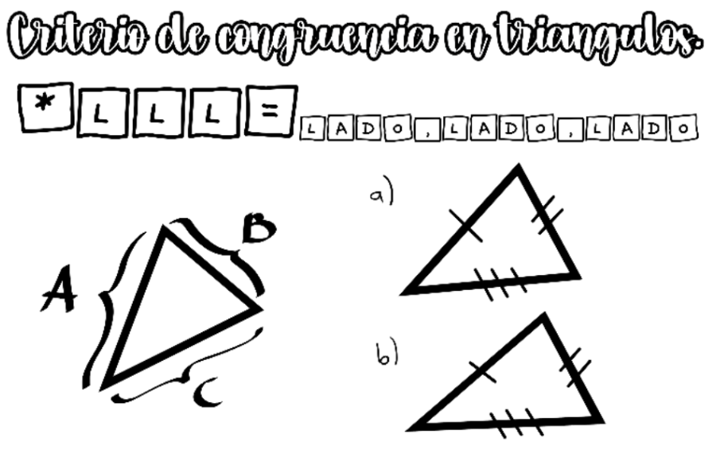
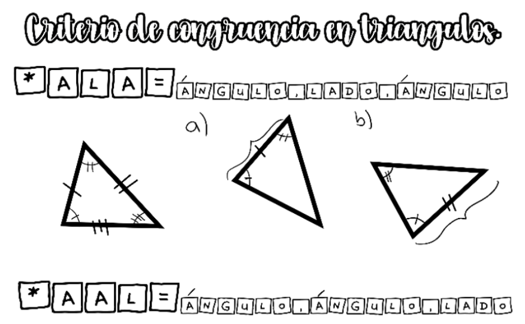
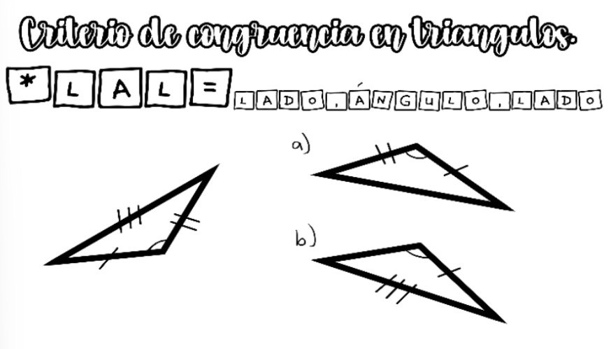

Memorama de congruencia de triángulos inspirado en talavera mexicana
Este juego está basado en la congruencia de triángulos. Para entender la dinámica, primero recordemos cuándo dos triángulos son congruentes.
Identificaremos que un triángulo es congruente a otro cuando sus tres lados son iguales. En este juego las cartas estarán marcadas con letras en los lados. En la ilustración (incisos a y b) se observa que son congruentes entre sí porque todos sus lados son iguales.
El segundo criterio es ALA o AAL. Considera que la suma de los ángulos internos de un triángulo es 180°; por ello, al conocer dos ángulos puede deducirse el tercero. De esta forma, AAL equivale a ALA, por lo que ambos son válidos. En el ejemplo, el inciso a es una respuesta válida al tener dos ángulos y un lado que corresponden a la figura original. En cambio, en el inciso b el lado 2 no está comprendido entre el ángulo 1 y el 2, por lo que no son triángulos congruentes.
En este caso observamos el criterio LAL: dos lados y el ángulo comprendido entre ellos deben coincidir. En la imagen, el triángulo congruente es el inciso a porque cumple esta condición. El inciso b sería incorrecto, ya que LLA no es un criterio válido en general (solo en triángulos rectángulos podría deducirse un lado con el Teorema de Pitágoras).
